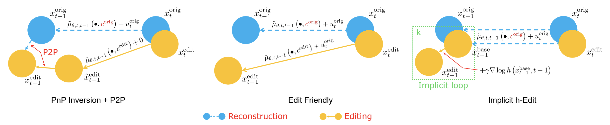

A. Overview:
We leverage Doob's h-transform to steer the generative process from a source distribution toward a target distribution that satisfies a desired condition. This is implemented in two complementary forms: implicit and explicit, both enabling flexible guidance without retraining.
Implicit form (slightly better):
We modify the transition distribution \( p(x_{t-1} \mid x_t) \) using the h-transform:
\[
p^{\text{h}}(x_{t-1} \mid x_t) = \frac{p(x_{t-1} \mid x_t)\, h(x_{t-1}, t - 1)}{h(x_t, t)}
\]
where \( h(x_t, t) = p_{\mathcal{Y}}(y \mid x_t) \) quantifies how likely \( x_t \) possesses the attribute \( y \).
Explicit form:
We modify the marginal distribution \( p(x_t) \) using the h-transform:
\[
p^{\text{h}}(x_t) = \frac{p(x_t)\, h(x_t, t)}{\mathbb{E}_{p(x_0)}[h(x_0, 0)]}
\]
As shown in our paper, adjusting \( p(x_{t-1} \mid x_t) \) and \( p(x_t) \) in this manner helps the process converge toward the desired target distribution at the final time step.
Sampling: To generate the next sample \( x_{t-1}^{\text{edit}} \), we apply Langevin Monte Carlo (LMC) sampling in both cases:
- In the implicit form, we sample from \( p^{\text{h}}(x_{t-1} \mid x_t) \)
- In the explicit form, we use the score \( \nabla_{x_t} \log p^{\text{h}}(x_t) \)
B. Update Formulations
Explicit Form:
We perform a direct update using the score of the modified marginal distribution:
\[
\begin{aligned}
x_{t-1} &\approx x_t + \eta \nabla_{x_t} \log \left( p(x_t)\, h(x_t, t) \right) + \sqrt{2\eta}\, z \\
&= \underbrace{x_{t-1}^{\text{base}}}_{\text{rec.}} + \underbrace{\eta \nabla_{x_t} \log h(x_t, t)}_{\text{editing}}
\end{aligned}
\]
Key Advantage of Explicit Form: The update naturally decomposes into a reconstruction term and an editing term. This allows incorporating multiple editing objectives by simply adding more h-functions.
Implicit Form:
We update \( x_{t-1} \) using the gradient of the modified transition distribution:
\[
\begin{aligned}
x_{t-1} &\approx x_{t-1}^{\text{init}} + \gamma \nabla_{x_{t-1}} \log p^{\text{h}}(x_{t-1} \mid x_t) + \sqrt{2\gamma}\, z \\
&= \underbrace{x_{t-1}^{\text{base}}}_{\text{rec.}} + \underbrace{\gamma \nabla_{x_{t-1}} \log h(x_{t-1}^{\text{base}}, t-1)}_{\text{editing}}
\end{aligned}
\]
Key Advantage of Implicit Form: The update can be framed as an optimization problem over \( x_{t-1} \), enabling iterative refinement:
\[
\begin{aligned}
x_{t-1}^{(0)} &= x_{t-1}^{\text{base}} \\
x_{t-1}^{(k+1)} &= x_{t-1}^{(k)} + \gamma \nabla_{x_{t-1}} \log h(x_{t-1}^{(k)}, t - 1)
\end{aligned}
\]
✅ Especially effective for hard editing cases (see experiments).
C. Designing h-Formulations
C.1. Text-guided Editing Design:
\begin{align*}
\nabla \log h(x_{t-1}, t - 1) &= \nabla \log p(y \mid x_{t-1}) \\
&= \nabla \log p(x_{t-1} \mid y) - \nabla \log p(x_{t-1})
\end{align*}
Where:
\( \nabla \log p(x_{t-1} \mid y) = \frac{-\tilde{\epsilon}_\theta(x_{t-1}, t - 1, \mathbf{c}^{\text{edit}})}{\sigma_{t-1}} \),
\( \nabla \log p(x_{t-1}) = \frac{-\tilde{\epsilon}_\theta(x_{t-1}, t - 1, \mathbf{c}^{\text{orig}})}{\sigma_{t-1}} \)
Classifier-Free Guidance:
\tilde{\epsilon}_\theta = (1 - w) \epsilon_\theta(x, t, \varnothing) + w \epsilon_\theta(x, t, \mathbf{c})
The role of \( \hat{w}^{\text{orig}} \) is essential to suppress undesired content and reinforce target features.
Comparison with other methods:

C.2. Reward-based Editing:
\begin{align*}
\nabla \log h(x_{t-1}, t - 1) &= \nabla \log \left[ \sum_{x_0} p(x_0 \mid x_{t-1}) h(x_0, 0) \right] \\
&= \nabla \log \left[ \mathbb{E}_{p(x_0 \mid x_{t-1})}[h(x_0, 0)] \right] \\
&\approx \nabla \log [ h(x_0 \mid x_{t-1}, 0) ]
\end{align*}
Where \( x_0 \mid x_{t-1} \) is approximated via Tweedie's formula. This enables reward-driven gradients from models trained on \( x_0 \) to guide editing.
{kind=link}